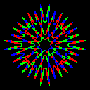
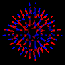
# JJJjjjjdDDD.gif
The red and blue layers together look like they might highlight some kind of letters, but it's difficult to tell. It might also be that there's a certain mathematical equation that plots out this pattern.
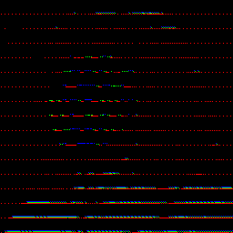
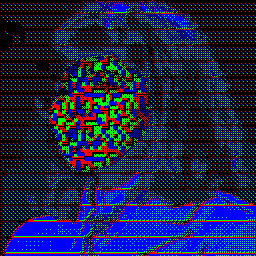
# whoid.gif

※ See Jeanette - Negra Estrella
Overlaying every frame of this gif results in an image of a woman, her face covered with some kind of RGB noise. Also, this gif seems to render differently when viewed through Discord.
The woman in this picutre is Spanish singer Jeanette.
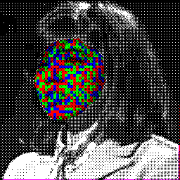
# JJJjjjjdDDD.gif + whoid.gif
Every frame of JJJjjjjdDDD.gif has a fitting place on its respective color channel for whoid.gif. If you find all the spots, then drag them back into the star shape, you'll get a clearer image of Jeanette.
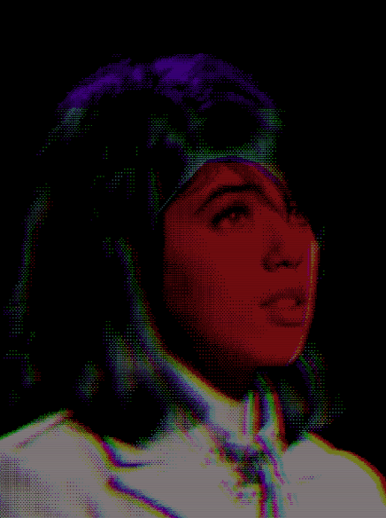
# glOOOOfD.mov
※ See Jeanette - Negra Estrella
If you take every frame of this video, then piece them together and stretched them out, another picture of Jeanette emerges. Bigger image here.

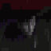
# yJbJK-f2.gif

※ See Jeanette - Negra Estrella
The rtve.es logo in the corner is censored. However, it would probably be unreadable even if it wasn't. Another interesting thing is that this gif is in a folder called /ylk/ that can not be accessed.
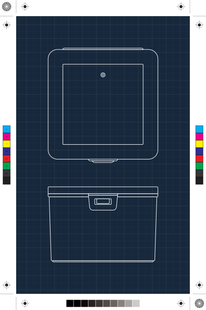
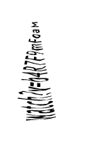
# yyyyyyY.pdf
※ See Odd Børre - Stress
The image inside this .pdf file appears to be of that of a... box? With a hole on the top side...? It's also ever so slightly off-center, which really irritates me.
The letters on the left correspond to the color names: Cyan, Yellow, Magenta, Cyan + Magenta, Magenta + Yellow, Cyan + Yellow, Cyan + Magenta + Yellow, Black (K, because B is for blue)
Opening this layer in Adobe Illustrator, you can notice some hidden paths of some letters and symbols. Toghether, these spell b4R7F9mFoaM, which is a YouTube video ID.
# EAS.gif , kin555.gif


If you thought all that blank space in the new post is weird, that's because there's actually a transparent gif right there. The text is likely to be an AES encrypted string.
A more legible gif has been added.
qfNqY79rc0UJtFBMVaOoK7KaISBIDQGiQNjSr46dJzWGmrgUrvQs+n8b/666Dey5
# iIIiiiIIIIiiiiIIIIii.wav
※ See Odd Børre - Stress
Morse code is basically a staple of the ARG at this point. You can find this in an HTML comment on /2021.html, which is linked to in the blog post.
When you decode it, you end up with a string of hex characters, and decoding that will give you a YouTube video ID.
-.... ..--- ...-- ....- ..... ..--- ...-- --... ....- -.... ...-- ----. -.... -.. ....- -.... -.... ..-. -.... .---- ....- -..
→ 6234523746396D466F614D
→ b4R7F9mFoaM
# red.mov, green.mov, blue.mov
The blog post also links to a few video files. green.mov and blue.mov render images in a raster fashion, line by line, and every frame of red.mov can be pieced together to form another image.
Observation: red.mov (256 frames), green.mov (1024 frames), blue.mov (4097 frames)
256*4 = 1024
1024*4 = 4096
Fauux seems to be aware of these numbers since even rec.gif is 1024x1024, so I find it quite strange that there is an extra (blank, even) frame for blue.mov. Adding up 256, 1024 and 4097 gives you 5377
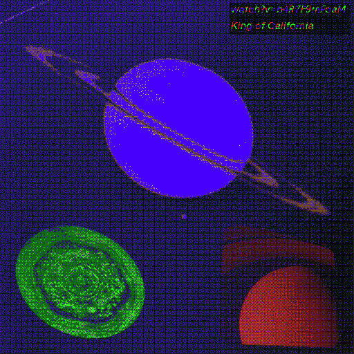
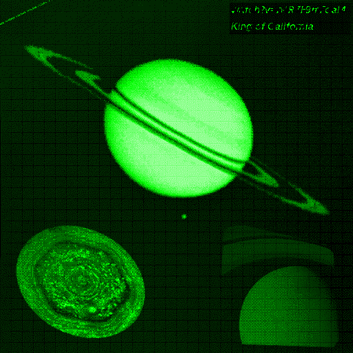
# Saturn
※ See Odd Børre - Stress
When you take these three images and overlay them, you get this rather peculiar image of Saturn and its hexagonal storm.
The text in the top-right corner points you to the Eurovision video (b4R7F9mFoaM) and says "King of Clifornia".
# b4R7F9mFoaM (ESC 1968 13 - Norway - Odd Børre - Stress)
※ See yyyyyyY.pdf, iIIiiiIIIIiiiiIIIIii.wav, Saturn
This is the video you had to mail to fauux last time so you could finish. Looking through the comments, there's a very recent and weird one from "King Cali". Randomly capitalized letters, weird wording... something's off here.
what Curious Voice, A random Dutch, 4 Professionals rant: 6 keystones! :)
YouTube is great for information transportation! Sorry for bad English, love from Brazil.
King Cali
Now, if you take the first letter of every word on the first line, you end up with wCVArD4Pr6k, which is another YouTube video ID.
Everything seems to point to this video, there's definitely more to it.
# wCVArD4Pr6k (Jeanette - Negra estrella (con Pic - Nic))
※ See whoid.gif, glOOOOfD.mov and yJbJK-f2.gif
Jeanette is the woman depicted in those images from earlier, they seem to have all been taken from this video. We can also find that yJbJK-f2.gif is actually the very beginning of this video.
This time there are two recent, weird comments with a similar format, written by "Trash Uploads" and "Pablo Pelcastre".
this is what i was looking for! Picnic Was Delightful = song Two Towers Linger!
Sorry for bad english, love from Spain!
Trash Uploads
Recording emotional cures, good i feel. Sorry for bad english, love from Argentina! :)
Pablo Pelcastre (edited)
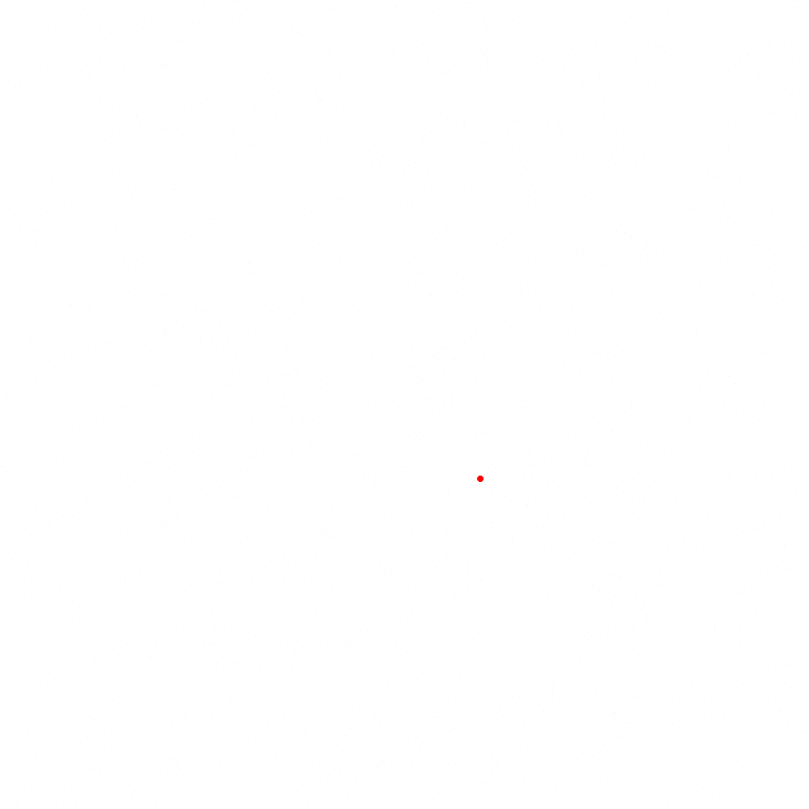
# rec.gif

There is now another weird comment on Negra Estrella, with the same format. Taking the first letters once again, you get "rec,gif", and by going to /rec.gif on fauux's site you can find this new image.

iygmdclp5u24sq9fhnvbk1zerj70.63xta8w
This appears to be an alphabet you'd use for a cipher. Every letter from A to Z appears exactly once, every number from 0-9 does too, and there's an extra dot to top it all of.
The gif has 16 frames, and the dot's blinking follows a 1011101011011111 pattern. If you inverse the 1s and 0s, you get a 0100010100100000 pattern. If you only look at the frames where it's red, you can notice a 13125 pattern.
Pattern visualization: linear, 4x4, 2x8, 8x2,
GIF resolution is 1024x1024.


# AES comment
There is a new AES string in the comment with the morse code audio file (/2021.html)
+PhVT/ekuoTp5BlA6tgSdassok/PhFChK7et28DsnkA7K0a6GYjaK2KAqNBVMLq9
red.mov assembled (256 frames)
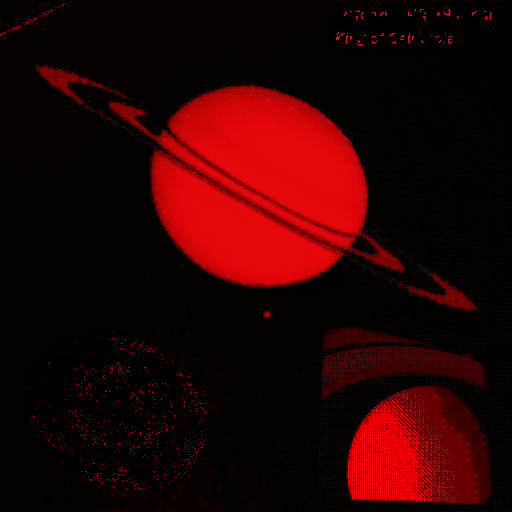
green.mov assembled (1024 frames)
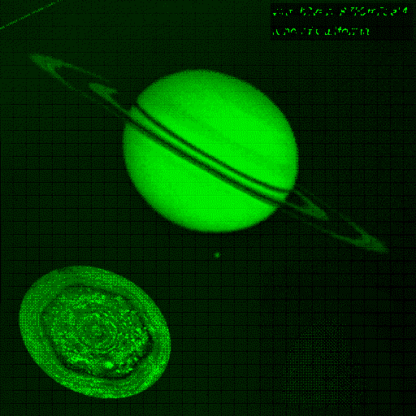
blue.mov assembled (4097 frames)
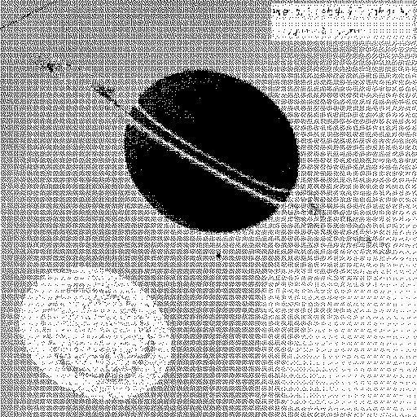
Visualizations for the blinking dot in rec.gif
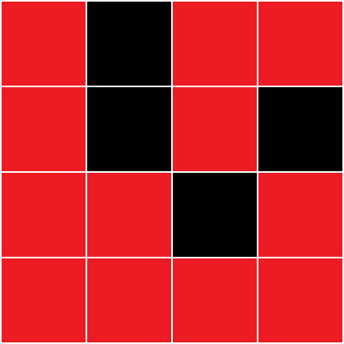
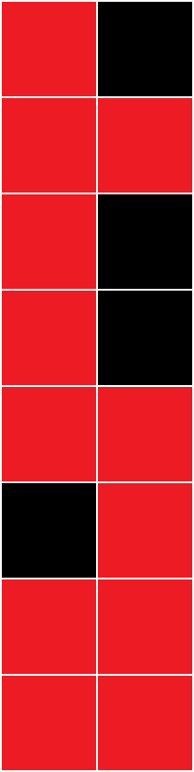
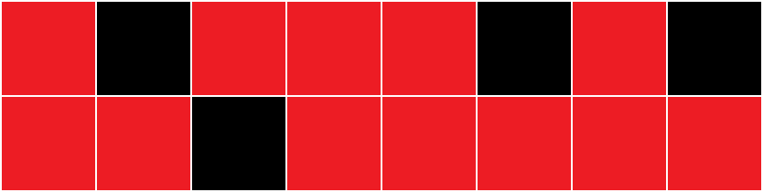
Jeanette assembler (600 frames)
Pieces together all the frames from glOOOOfD.mov
Red Saturn assembler (256 frames)
Pieces together all the frames from red.mov
Blue Saturn overlayer (4097 frames)
WARNING: There are 4097 frames! That's 4097 images! Your browser and/or PC is VERY LIKELY to freeze up the longer you have this open in your browser! Proceed with caution.
Overlays every frame of blue.mov
Blink pattern shifter
You can write stuff on top of the blink pattern, then shift it around.
rec.gif word mapper
This is probably useless but it's kinda fun
aesencryption.net
This is the site fauux used to encrypt last time. It somehow allows for keys to be of any length, so other sites that don't allow that might not work properly.
cryptii.com
Various encoding/decoding/ciphering tools.
paulschou.com/tools/xlate
More decoding stuff.
morsecode.world/international/decoder/audio-decoder-adaptive.html
Decode morse from audio files
morsedecoder.com
Decode morse from text